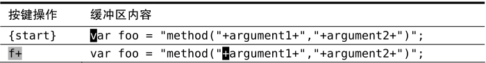
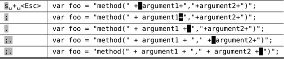

）。因此，当我们输入 f+ 时，光标会直接移到下一个 + 号所在的位置。我们将会在技巧49里学到更多关于 f{char}命令的知识。
）。因此，当我们输入 f+ 时，光标会直接移到下一个 + 号所在的位置。我们将会在技巧49里学到更多关于 f{char}命令的知识。技巧3以退为进
我们可以用一种常用的Vim操作习惯在一个字符前后各添加一个空格。乍一看，这种方法有点古怪，不过其好处是可重复，这将使我们可以事半功倍地完成工作。
假设有一行代码看起来是这样的：
在JavaScript里把字符串连接到一起从来都不美观，但我们可以像下面这样在 +号前后各添加一个空格，让肉眼更容易识别：
使修改可重复
下面的惯用方法可以解决这个问题：


s 命令把两个操作合并为一个：它先删除光标下的字符，然后进入插入模式。在删除 + 号后，我们先输入␣+␣，然后退出插入模式。
先后退一步，然后前进三步，这是个奇怪的小花招，看起来可能不够直接。但这样做最大的好处是：我们可以用 . 命令重复这一修改。我们所要做的只是把光标移到下一个 + 号处，然后用 . 命令重复这一操作即可。
使移动可重复
本例中还有另外一个小窍门。f{char} 命令让Vim查找下一处指定字符出现的位置，如果找到了，就直接把光标移到那里（参见 :h f ）。因此，当我们输入 f+ 时，光标会直接移到下一个 + 号所在的位置。我们将会在技巧49里学到更多关于 f{char}命令的知识。
完成第一处修改后，我们可以重复按 f+ 命令跳到下一个 + 号所在的位置。不过，还有一种更好的方法可以用。; 命令会重复查找上次 f 命令所查找的字符，因此我们用不着输入4次 f+，而是只用输入一次，后面跟着再用3次 ; 命令。
合而为一
; 命令带我们到下一个目标字符上，而 . 命令则重复上次的修改。因此，我们可以连续输入3次 ;. 来完成全部修改。看起来是不是很熟悉？
与其和Vim区分模式的编辑模型做斗争，倒不如与它一起协同工作。然后，你就会发现它能把特定任务变得多么的容易。